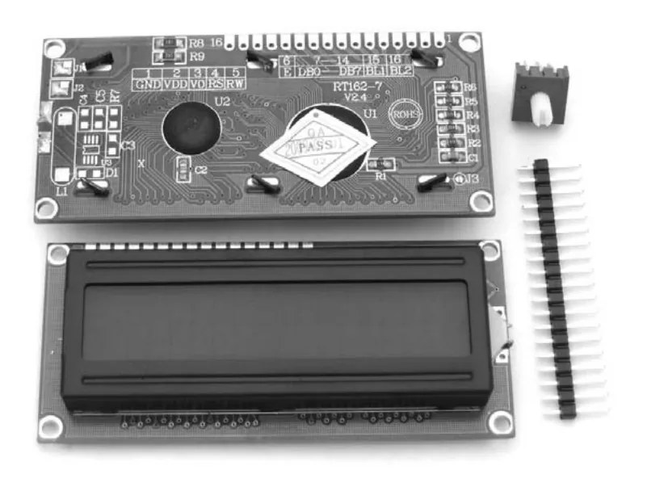
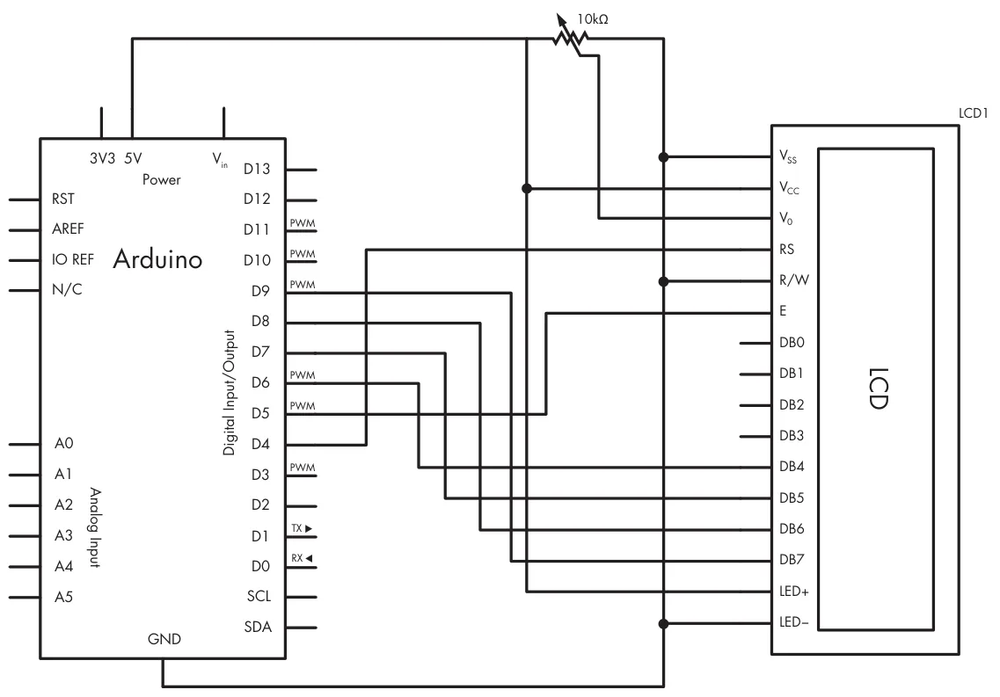
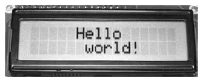
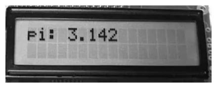
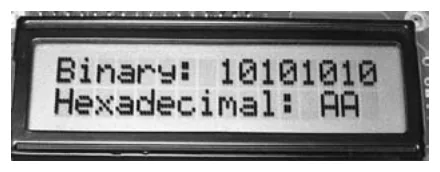

LCD modules that display characters such as text and numbers are the most inexpensive and simplest to use of all LCDs. They can be purchased in various sizes, which are measured by the number of rows and columns of characters they can display. Some include a backlight and allow you to choose the color of the character and the background color. Any LCD with an HD44780- or KS0066-compatible interface should work with your Arduino. The first LCD we’ll use is a 16-character–by–2-row LCD module with a backlight, as shown in Figure 7-1.

The trimpot (the variable resistor for the LCD) has a value of 10 kΩ and is used to adjust the display contrast. The header pins are soldered into the row of holes along the top of the LCD to make insertion into our breadboard straightforward. The holes along the top of the LCD are numbered 1 through 16. Number 1 is closest to the corner of the module and marked as VSS (connected to GND) in the schematic shown in Figure 7-2. We’ll refer to this schematic for all of the LCD examples in this book.

Using a Character LCD in a Sketch
To use the character LCD shown in Figure 7-1, we will first explain the required functions and how they work through some simple demonstrations. Enter and upload the basic sketch shown in Listing 7-1:
// Listing 7-1
#include <LiquidCrystal.h>
LiquidCrystal lcd(4, 5, 6, 7, 8, 9); // pins for RS, E, DB4, DB5, DB6, DB7
void setup()
{
lcd.begin(16, 2);
lcd.clear();
}
void loop()
{
lcd.setCursor(0, 5);
lcd.print("Hello");
lcd.setCursor(1, 6);
lcd.print("world!");
delay(10000);
}Figure 7-3 shows the result of Listing 7-1.

Now to see how the sketch in Listing 7-1 works. First we need to include two initial lines in the sketch. Their purpose is to include the library for LCD modules (which is automatically installed with the Arduino IDE), and then we need to tell the library which pins are connected to the Arduino. To do this, we add the following lines before the void setup() method:
#include <LiquidCrystal.h>
LiquidCrystal lcd(4, 5, 6, 7, 8, 9); // pins for RS, E, DB4, DB5, DB6, DB7If you need to use different digital pins on the Arduino, adjust the pin numbers in the second line of this code.
Next, in void setup(), we tell the Arduino the size of the LCD in columns and rows. For example, here’s how we’d tell the Arduino that the LCD has two rows of 16 characters each:
lcd.begin(16, 2);Displaying Text
With the LCD setup complete, clear the LCD’s display with the following:
lcd.clear();Then, to position the cursor, which is the starting point for the text, use this:
lcd.setCursor(x, y);Here, x is the column (0 to 15) and y is the row (0 or 1). So, for example, to display the word text, you would enter the following:
lcd.print("text");Now that you can position and locate text, let’s move on to displaying variable data.
Displaying Variables or Numbers
To display the contents of variables on the LCD screen, use this line:
lcd.print(variable);If you are displaying a float variable, you can specify the number of decimal places to use. For example, lcd.print(pi, 3) in the following example tells the Arduino to display the value of pi to three decimal places, as shown in Figure 7-4:
float pi = 3.141592654;
lcd.print("pi: ");
lcd.print(pi, 3);
When you want to display an integer on the LCD screen, you can display it in hexadecimal or binary, as shown in Listing 7-2.
// Listing 7-2
int zz = 170;
lcd.setCursor(0, 0);
lcd.print("Binary: ");
lcd.print(zz, BIN); // display 170 in binary
lcd.setCursor(0, 1);
lcd.print("Hexadecimal: ");
lcd.print(zz, HX); // display 170 in hexadecimalThe LCD will then display the text shown in Figure 7-5.
